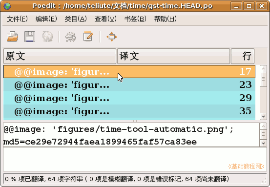

Poedit 基础教程
作者：TeliuTe 来源：基础教程网
设置好以后，就可以开始po文件的翻译了，下面我们来看一个练习；
1、基本窗口
1）启动 Poedit，点菜单“文件-打开”，打开前面生成的gst-time.HEAD.po 文件，
没翻译的是蓝色，翻译了的是白色，模糊翻译的是淡黄色；

2）从底下的状态栏可以看出，一共有64个词条，还没开始翻译；
3）光标停在第一个词条上，下边显示了完整的句子，译文一行为空；
4）中间显示了原文的各行词条，当前是第一条，以及右边的译文，最右边显示了行号；
2、翻译操作
1）用鼠标点击下边的译文词条行，出现光标插入点，根据注释可知@@ 这一行是图片标识，直接复制到译文即可；
2）按 Alt+C 复制原文到译文，第一条就翻译好了，按 Ctrl+下方向键，或点击下一条；
3）同样按 Alt+C 复制下面三条图片标识，按 Ctrl+S 保存一下文件，记着要经常保存，
翻译过的词条自动到最后，一般先切换到下一条未翻译的，然后再保存；
4）如果是模糊翻译的词条，词条颜色是淡黄色的，翻译好以后，点工具栏上的云彩图标，让它弹起来；
4）这样一条一条往下翻译，可以借助一些翻译软件查词，比如星际译王、金山词霸等等；
本节学习了翻译po文件的基本操作，如果你成功地完成了练习，请继续学习下一课内容；
本教程由86团学校TeliuTe制作|著作权所有
基础教程网：http://teliute.org/
美丽的校园……
转载和引用本站内容，请保留版权信息和本站链接。